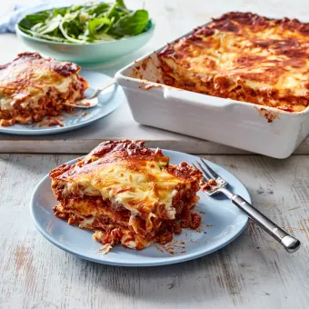

Back To Home
Nick's Classic Beef Lasagne

Description:
Traditional beef lasagne recipe made from scratch including a slow cooked bolognese sauce, and cheesy bechamel
sauce.
This recipe makes one large lasagne that feeds 6 - 8 people. You can freeze half to use another time,
just thaw out in the fridge and re-heat.
30 min prep time. 1h 45min (+15 min setting time) cook time.
servings for 8.
Ingredients:
Basic Bolognese Sauce:
- 1 tbsp olive oil
- 1 onion, finely chopped
- 2 celery stalks, finely chopped
- 2 garlic cloves, crushed
- 1kg beef mince
- ½ cup (110g) tomato paste
- ¾ cup (185ml) stock or red wine
- 1 x 400g can diced tomatoes
- 1 x 700g bottle tomato passata
Bechamel Sauce:
- 1 Ltr (4 cups) milk
- 1 brown onion, halved, coarsely chopped
- 8 fresh parsley stalks
- 8 whole black peppercorns
- 4 whole cloves
- 2 bay leaves
- 3 tbsp (60g) Western Star Original Butter
- ⅓ cup (50g) plain flour
- 1 cup (100g) Perfect Italiano™ Traditional Parmesan Grated
- Pinch ground nutmeg, Salt & Pepper, to taste
Lasagne:
- Olive oil, plus extra, to grease
- 5 fresh lasagne sheets
- 1 cup (90g) Perfect Italiano™ Mozzarella
- Mixed salad leaves, to serve
Method:
Basic Bolognese Sauce:
- To make the Bolognese, heat the oil in a large heavy based saucepan over medium heat. Add the onion, celery
and garlic and cook, stirring, for 5 minutes
or until onion softens. Add mince and cook, stirring to
break up lumps for 5 minutes or until browned
- Add the tomato paste and stock or red wine to mince mixture and bring to the boil. Reduce heat and simmer
for 5 minutes
or until stock or wine reduces slightly
- Add the diced tomato and passata and simmer, stirring occasionally, for 45 minutes or until sauce thickens
Bechamel Sauce:
- Meanwhile, to make the bechamel sauce, combine the milk, onion, parsley stalks, peppercorns, cloves and bay
leaves in a medium saucepan and bring to a simmer over medium heat.
Remove from heat and set aside for
15 minutes to infuse. Strain the milk mixture through a fine sieve into a large jug. Discard solids
- Melt the butter in a large saucepan over medium-high heat until foaming. Add the flour and cook, stirring,
for 1-2 minutes
or until mixture bubbles and begins to come away from the side of the pan. Remove from
heat
- Add half of the milk mixture, whisking continuously. Place pan back on medium-high heat. Whisk until thick.
Add the rest of the milk, whisking continuously.
Bring the sauce to a boil. Reduce the heat and simmer
for five minutes, using a wooden spoon or spatula to stir continuously
- Add the Parmesan and stir until the cheese melts. Taste and season with nutmeg, salt and pepper, as desired
lasagne:
- Preheat oven to 180°C / 160°C fan-forced. Brush a rectangular 3 L (12 cup capacity) ovenproof dish with oil
to lightly grease
- Spread ¼ of the bechamel over the base of the prepared dish. Arrange lasagne sheet over the sauce.
Top
with ⅓ of the bolognese and ⅓ of the remaining bechamel. Continue layering with the remaining lasagne
sheets, bolognese and bechamel, finishing with a layer of bechamel. Sprinkle with Mozzarella
- Bake in preheated oven for 40 minutes or until cheese melts, is golden brown, and the edges are
bubbling.
Remove from oven and set aside for at least 15 minutes to set
- Cut the lasagne into 8 portions and serve with mixed salad leaves